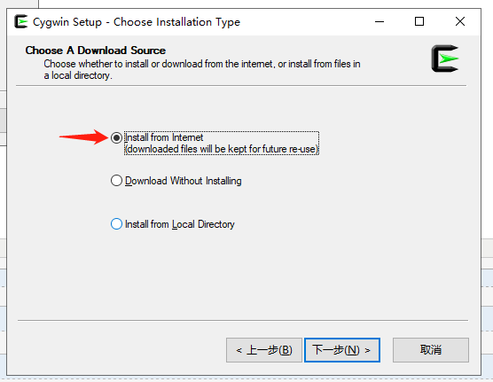
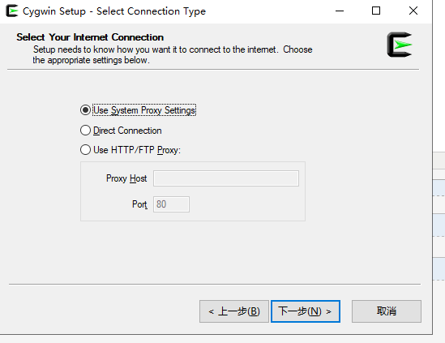

C Configuración del entorno
Si desea configurar el entorno de C, debe asegurarse de que su computadora tenga los dos siguientes programas disponibles: un editor de texto y un compilador de C.
Editor de texto
Los archivos creados con un editor generalmente se denominan archivos fuente, y contienen el código fuente del programa.
Los archivos fuente de los programas en C suelen usar la extensión.c。
Antes de comenzar a programar, asegúrese de tener un editor de texto y la experiencia suficiente para escribir un programa de computadora, guardarlo en un archivo, compilarlo y ejecutarlo.
Visual Studio Code: Aunque es un editor de texto de propósito general, tiene muchos complementos que admiten el desarrollo en C/C++, lo que lo convierte en una opción popular. Al instalar el complemento C/C++ y ajustar la configuración, puede convertirlo en un buen entorno de desarrollo para el lenguaje C.
Tutorial de instalación:https://www.example.com/w3cnote/vscode-tutorial.html
Dirección de descarga:https://code.visualstudio.com/
Sublime Text: Sublime Text es un editor de texto ligero, rápido y altamente personalizable, con muchos complementos que admiten el desarrollo en C. Tiene potentes funciones de edición de código y atajos de teclado que hacen que la codificación sea más eficiente.
Dirección de descarga:https://www.sublimetext.com/
Atom: Atom es un editor de texto de código abierto desarrollado por GitHub. Tiene muchos complementos y temas que pueden personalizarse para convertirlo en un entorno adecuado para el desarrollo en C.
Dirección de descarga:https://atom-editor.cc/
VimyEmacs: Estos dos son editores de texto tradicionales, con potentes funciones de edición y alta personalización. Son muy poderosos para usuarios experimentados, y tienen muchos complementos y configuraciones que admiten el desarrollo en C.
Eclipse: Eclipse es otro entorno de desarrollo integrado muy potente. Aunque originalmente fue diseñado para el desarrollo en Java, al instalar el complemento C/C++ se puede hacer que admita el desarrollo en C.
Compilador de C
El código fuente escrito en el archivo fuente es legible para los humanos. Debe "compilarse" para convertirse en lenguaje de máquina, de modo que la CPU pueda ejecutar el programa de acuerdo con las instrucciones dadas.
El compilador de C se utiliza para compilar el código fuente en un programa ejecutable final. Aquí se asume que ya tiene un conocimiento básico de los compiladores de lenguajes de programación.
El compilador gratuito más utilizado es el compilador C/C++ de GNU. Si está utilizando HP o Solaris, puede usar el compilador de su respectivo sistema operativo.
Las siguientes secciones le guiarán sobre cómo instalar el compilador C/C++ de GNU en diferentes sistemas operativos. Aquí se mencionan C/C++ juntos principalmente porque el compilador gcc de GNU es adecuado para los lenguajes de programación C y C++.
Instalación en UNIX/Linux
Si está utilizandoLinux o UNIX, use el siguiente comando en la línea de comandos para comprobar si GCC está instalado en su sistema:
$ gcc -v
Si su computadora ya tiene instalado el compilador GNU, se mostrará un mensaje como el siguiente:
Using built-in specs. Target: i386-redhat-linux Configured with: ../configure --prefix=/usr ....... Thread model: posix gcc version 4.1.2 20080704 (Red Hat 4.1.2-46)
Si GCC no está instalado, siga lashttp://gcc.gnu.org/install/instrucciones detalladas en el enlace para instalar GCC.
Este tutorial está escrito basado en Linux, y todos los ejemplos dados se han compilado en un sistema Cent OS Linux.
Instalación en Mac OS
Si está utilizando Mac OS X, la forma más rápida de obtener GCC es descargar el entorno de desarrollo Xcode desde el sitio web de Apple y seguir las instrucciones de instalación. Una vez instalado Xcode, podrá usar el compilador GNU.
Xcode actualmente se puededeveloper.apple.com/technologies/tools/descargar desde.
Instalación en Windows
Cygwin
Cygwin es un paquete de software que simula un entorno Unix/Linux en el sistema operativo Windows, lo que permite a los usuarios usar herramientas y aplicaciones similares a Unix en Windows.
Cygwin proporciona un conjunto de DLL (bibliotecas de enlace dinámico) que actúan como un puente entre la capa de llamadas al sistema Unix y el núcleo de Windows, lo que permite que los programas Unix se ejecuten en sistemas Windows.
Sitio oficial de Cygwin: https://www.cygwin.com/。
Descargue el paquete de instalación desde el sitio oficial:

Una vez completada la descarga, haga doble clic en el archivo descargado:

A continuación, puede hacer clic en Siguiente (Next) sucesivamente:


Aquí podemos agregar el espejo de código abierto de NetEase y el espejo de Alibaba Cloud.https://mirrors.aliyun.com/cygwin/：

Después de la instalación, se generará un icono en el escritorio:

Haga doble clic en el icono, ingrese a la interfaz de línea de comandos y escribacygcheck -c cygwinel comando para ver la información de versión actual de Cygwin:

A continuación, instalaremos el entorno de compilación de gcc/g++. En la línea de comandos, vaya al directorio de setup-x86_64.exe y ejecute:
setup-x86_64.exe -q -P wget -P gcc-g++ -P make -P diffutils -P libmpfr-devel -P libgmp-devel -P libmpc-devel
Después de la instalación, ingrese a la terminal Cygwin64 y escribagcc --versionel comando para ver la información de versión.
MinGW-w64
Para instalar GCC en Windows, necesita instalar MinGW-w64.
MinGW-w64 es un proyecto de código abierto que proporciona un conjunto completo de herramientas GCC para sistemas Windows, compatible con la compilación de aplicaciones Windows de 32 y 64 bits.
Visite la página principal de MinGW-w64mingw-w64.org, entre a la página de descarga de MinGWhttps://www.mingw-w64.org/downloads/, descargue la última versión del instalador de MinGW-w64.
La página de detalles de descarga de MinGW-w64 contiene muchos paquetes integrados de MinGW-w64 y de herramientas específicas:

Solo instalaremos MinGW-w64, por lo que solo necesitamos descargar MinGW-w64. Haga clic en el enlace 'SourceForge' en el recuadro rojo para ir a la página de descarga de MinGW-w64 en SourceForge.
Descargue MinGW-w64 desde SourceForge:https://sourceforge.net/projects/mingw-w64/files/
También hay paquetes binarios compilados en GitHub:https://github.com/niXman/mingw-builds-binaries/releases

Puede descargar el instalador para el sistema especificado:
- Sistema de 32 bits:installer.exe
- Sistema de 64 bits:installer.exe

Este tipo de instalación puede encontrar problemas de conexión de red, por lo que podemos descargar directamente sjlj (estable, compatible con 64 bits y 32 bits):
<p>Desplácese hacia abajo en la página y descargue el instalador:</p> <p><img decoding="async" style="width:70%" src="../wp-content/uploads/2014/09/7b544fedd185c3b84692c9e7aaf12cf2.png"></p><p> Este tipo de instalación puede encontrar problemas de conexión de red, por lo que podemos descargar directamente sjlj (estable, compatible con 64 bits y 32 bits):</p> <p><img decoding="async" style="width:70%" src="../wp-content/uploads/2014/09/7b544fedd185c3b84692c9e7aaf12cf2.png"></p>Después de la descarga, descomprima el archivo. En el directorio bin podrá encontrar g++.exe o gcc.exe:

Al instalar MinGW, debe instalar al menos gcc-core, gcc-g++, binutils y MinGW runtime, pero en general se instalan más elementos adicionales.
Agregue el subdirectorio bin de su MinGW instalado a suPATHvariable de entorno, para que pueda especificar estas herramientas por nombres simples en la línea de comandos.

Cuando finalice la instalación, puede ejecutar gcc, g++, ar, ranlib, dlltool y otras herramientas GNU desde la línea de comandos de Windows.
Otras extensiones